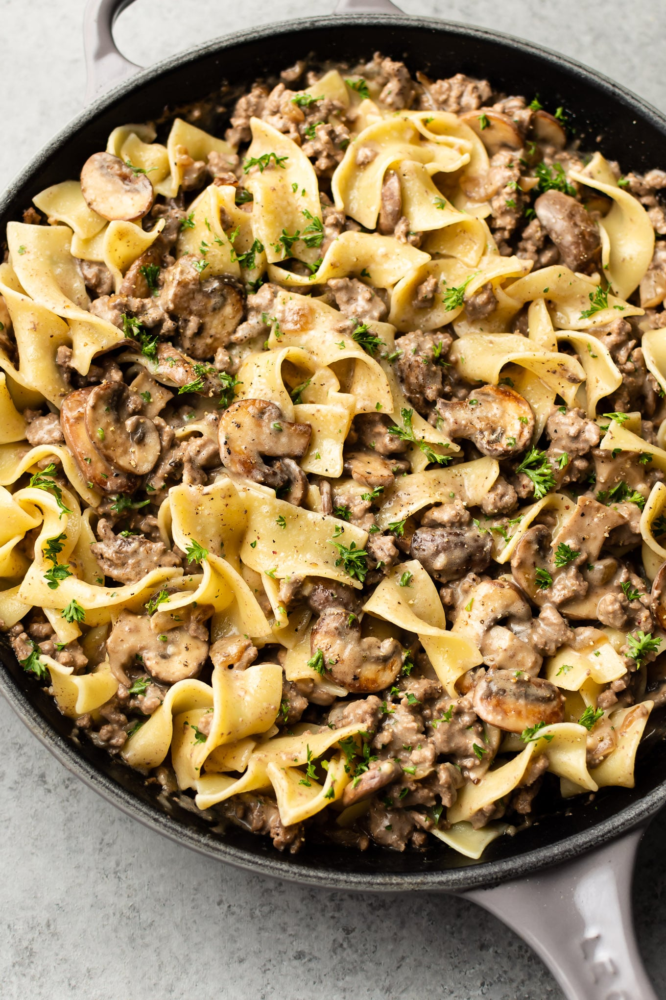

Beef Stroganoff

This rich and creamy ground beef stroganoff with egg noodles is super simple to prepare, and ready to serve in under 40 minutes making it a great choice for busy weeknights. Garnish with freshly chopped parsley for added color and flavor.
Servings
4
Prep Time
10 Minutes
Cook Time
25 Minutes
Total Time
35 Minutes
Ingredients
- 1 tablespoon olive oil
- 1 tablespoon butter
- 7 ounces cremini mushrooms sliced
- 1/2 medium onion chopped
- 3 cloves garlic minced
- 1 pound extra lean ground beef
- 2 tablespoons flour
- 1 tablespoon Worcestershire sauce or more, to taste
- 1 tablespoon Dijon mustard or more, to taste
- 1 cup beef broth
- 1/2 cup sour cream (full fat)
- Salt & pepper to taste
Instructions
- Add the oil and butter to a skillet over medium-high heat. Once the pan is hot, add the mushrooms and onions. Sauté, stirring occasionally, for about 7-10 minutes or until the water has been released from the mushrooms and it cooks off and they get a nice sear. Remove the mushrooms/onions from the pan and set aside.
- Add the ground beef to the skillet and cook it until browned (about 8 minutes), breaking it up with your spoon as you go along. Once the beef starts cooking a bit, stir in the garlic. If there's a lot of excess fat (there shouldn't be if you used very lean beef), spoon most of it out once the meat is done browning.
- Sprinkle the flour over the beef and stir it in. Let it cook for about a minute (stir it a few times).
- Add in the Worcestershire sauce, Dijon mustard, and broth, and cook for another 1-2 minutes, stirring until the flour & mustard have dissolved and it's heated through (also be sure to scrape the bits from the bottom of the pan).
- Add the mushrooms and onions back to the pan (stir them in).
- Take the pan off the heat and stir in the sour cream. Season with salt & pepper as needed. Serve immediately over buttered egg noodles, mashed potatoes, or rice.